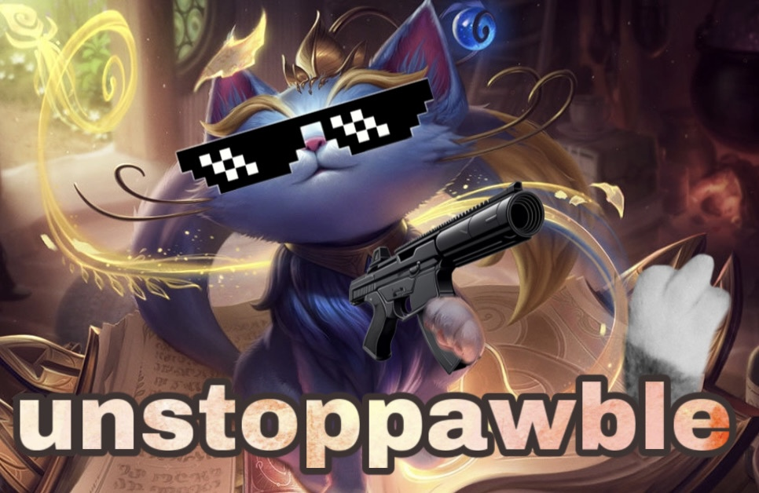
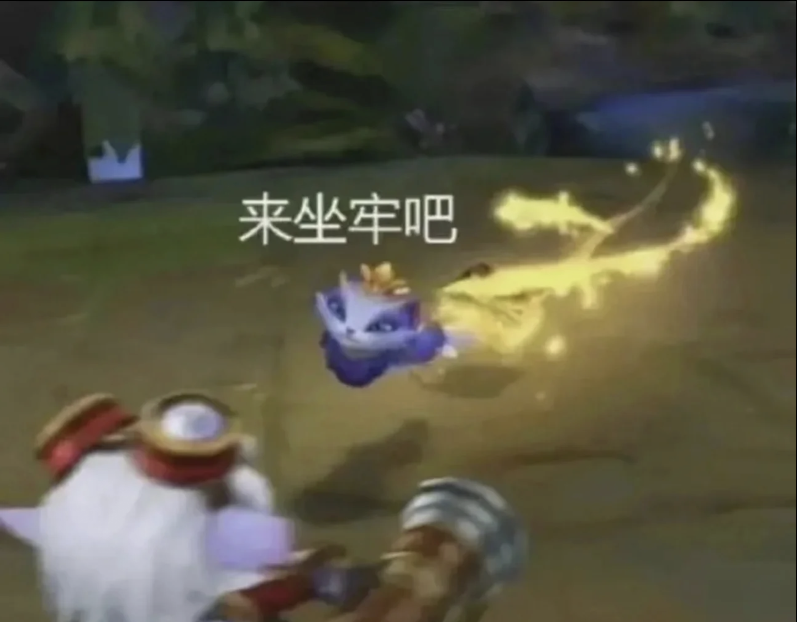

悠咪保證班
目前專精等級12


隊友們你好，請相信我的悠咪 TRUST MY YUUMI🐱
我不是來送的，我是來帶你上分的。

✌️ 咪會負責的事 👌
1) 我會插眼👁️（真的）
2) 我會保護好AD🕶️（也是真的）
3) 我會跟打野（不亂逛）
4) 我會開戰按R😤（不把大招留到下一局）
5) 我會治癒＋虛弱（如果沒有是我忘了或太慌了😝）
若本局輸了：是對面太強；若贏了：一定是本咪的功勞。
🐱 悠咪玩家守則 📋
-
守則一：信任原則
請相信悠咪玩家的判斷。悠咪不說話的時候，通常是在思考怎麼贏這場遊戲。
-
守則二：搭車禮儀
當悠咪上車時，請不要突然往敵方五人中間衝刺。悠咪是輔助，不是安全氣囊。
-
守則三：關於鞋子
正常情況下，悠咪是不需要鞋子的。如果悠咪出了鞋子，代表隊伍內部出現了嚴重的信任問題。
-
守則四：最佳宿主
悠咪會優先跟隨本場最有潛力的玩家。不是咪偏心，而是戰術選擇。
-
守則五：Q技能責任
如果Q沒有命中敵人，那通常是因為敵人走位過於不講道理。
-
守則六：團戰職責
悠咪的任務是確保隊友能持續戰鬥。如果團戰輸了，請先檢討對面的裝備是否過於離譜。
-
守則七：終極信念
只要隊伍還有一絲希望，悠咪就會繼續補血。
⚠️ 悠咪鞋子警告系統 ⚠️
正常情況下，悠咪是不需要鞋子的。
如果悠咪出了鞋子，通常代表以下幾種情況：
1.隊友不讓悠咪上車
2.隊友突然衝進 1v5
3.ADC 對線期瘋狂往前送
4.團隊出現嚴重信任危機
📂 請選擇你本場的輔助類型
軟輔
硬輔
法輔
ad流輔助
提示：你點別的案件，這裡會直接換內容。
🎲 本場悠咪勝率預測 🎲
系統將根據隊友狀態、宇宙能量與悠咪的心情進行分析。

相信悠咪，悠咪就會幫你❤️